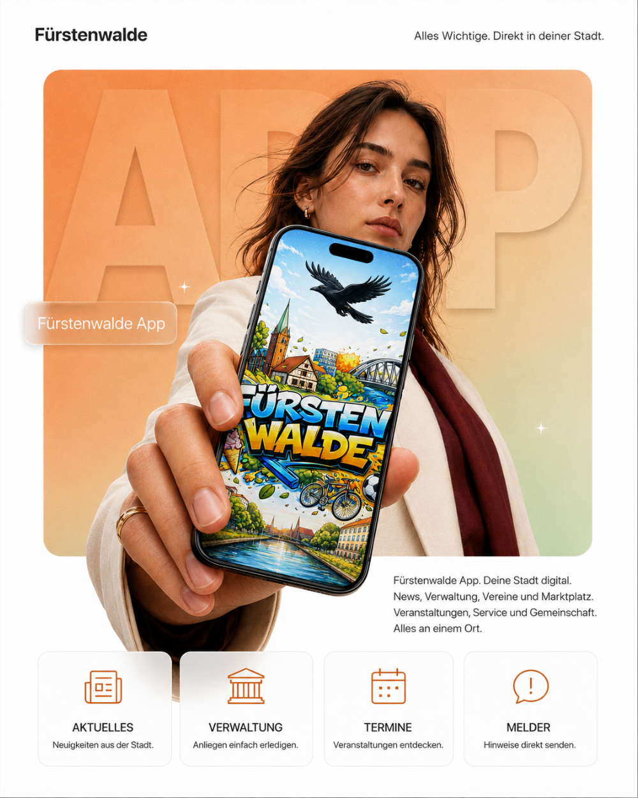

Für Bürgerinnen und Bürger
News, Veranstaltungen, Fundmeldungen, Nachbarschaftshilfe und lokale Angebote an einem Ort.
Dein Stadtleben. Eine App. Mit Fürstenwalde findest du News, Events, Vereine, lokale Angebote, Verwaltung, Nachbarschaftshilfe und Bürgerbeteiligung direkt auf deinem Smartphone.
Projekt anfragen →
Fürstenwalde ist die zentrale App für dein Stadtleben in Fürstenwalde und Umgebung. Sie bündelt lokale Nachrichten, Veranstaltungen, Verwaltungsangebote, Vereine, Geschäfte und Community-Funktionen an einem Ort.
Ob aktuelle Meldungen aus der Stadt, Events in deiner Nähe, Nachbarschaftshilfe, lokale Angebote, Fundmeldungen, Bürgerbeteiligung oder Informationen zur Verwaltung: Die App hilft dir, schneller zu finden, was vor Ort wichtig ist.
Mit Fürstenwalde kannst du lokale Veranstaltungen entdecken, dich mit Gruppen und Vereinen vernetzen, Dinge kaufen, verkaufen oder verleihen, Fragen an die Verwaltung stellen und Push-Benachrichtigungen zu relevanten Neuigkeiten erhalten.
Auch lokale Geschäfte, Ärzte, Tourismus-Infos, Politik, Umfragen und Serviceangebote sind direkt erreichbar. Die App richtet sich an Bürgerinnen und Bürger, Vereine, lokale Unternehmen und alle, die Fürstenwalde aktiv erleben und mitgestalten möchten.
News, Veranstaltungen, Fundmeldungen, Nachbarschaftshilfe und lokale Angebote an einem Ort.
Mehr Sichtbarkeit, bessere Vernetzung und direkte Kommunikation mit Menschen vor Ort.
Geschäfte, Angebote, Aktionen und Services werden direkt in der Stadt-App auffindbar.